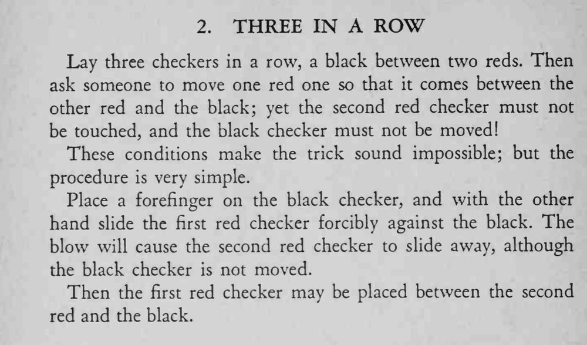

三枚棋子红、黑、红排成一行，魔术师只拿起一枚红棋，就让两枚红棋把黑棋夹在中间，另一枚红棋和黑棋都没有被碰过。
推撞要短促有力，桌面要够滑；手指必须按定黑棋。

Lay three checkers in a row, a black between two reds. Then ask someone to move one red one so that it comes between the other red and the black; yet the second red checker must not be touched, and the black checker must not be moved! These conditions make the trick sound impossible; but the procedure is very simple. Place a forefinger on the black checker, and with the other hand slide the first red checker forcibly against the black. The blow will cause the second red checker to slide away, although the black checker is not moved. Then the first red checker may be placed between the second red and the black.